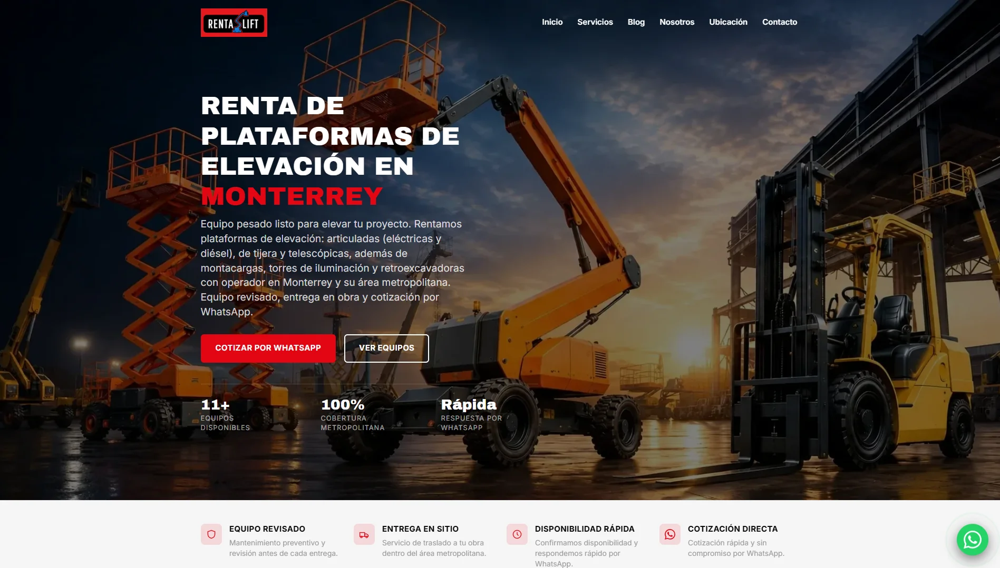
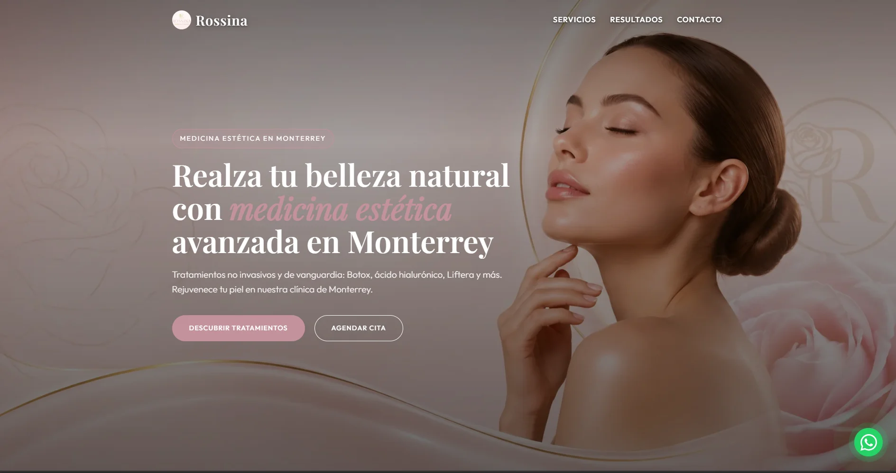
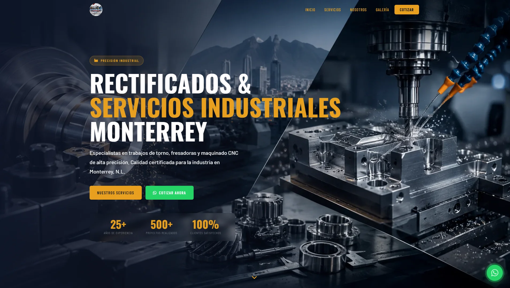
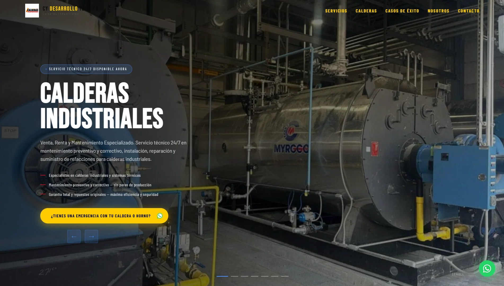
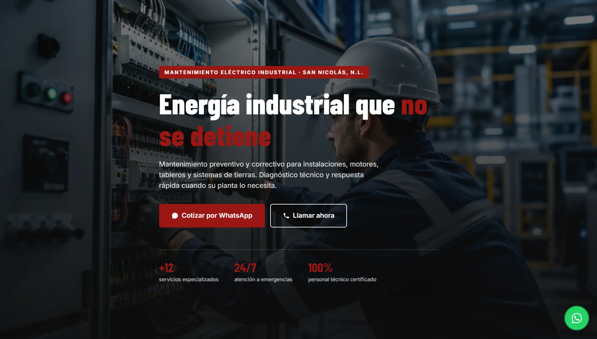

Contacto
- edgarballeza10@gmail.com
- 8123384579
- Mexico, Monterrey
Módulos de Competencia
Habilidades Técnicas
Desarrollador Full-Stack
TechInnovate Solutions | 2024 – Actualidad
- Liderazgo en el desarrollo de la arquitectura de microservicios usando Node.js y React.
- Frontend: React.js, Next.js, HTML5, Tailwind CSS
- Backend: Node.js, Express, Python (Django)
- Bases de Datos: PostgreSQL, MongoDB, SQL Server
- Control de Versiones: Git, GitHub/GitLab
Técnico Mecánico y Soldador Industrial
Mantenimiento I.P. | 2019 – 2024
- Realización de trabajos de soldadura de precisión en estructuras críticas y maquinaria pesada.
- Diagnóstico y reparación de fallas mecánicas e hidráulicas, **asegurando la continuidad operativa (98% de disponibilidad)**.
- Responsable del control de inventario de piezas de recambio y del proceso de entrada/salida de facturas de proveedores.
Proyectos Realizados
01. Rentalift - Renta de Equipo
Sitio Web para una empresa dedicada a la renta de plataformas articuladas Genie, montacargas y retroexcavadoras.

02. ROSSINA - Medicina Estética
Sitio Web de medicina estética, enfocado en la presentación de servicios y tratamientos de belleza y bienestar.

03. Rectificados Monterrey
Sitio Web para una empresa de rectificados, especialistas en trabajos de torno, fresadoras y maquinado CNC de alta precisión.

04. CY Desarrollo Térmico
Sitio Web para una empresa especializada en calderas industriales y sistemas térmicos. Ofreciendo mantenimiento y servicios integrales.

05. Mantenimiento Eléctrico Industrial
Sitio Web para una empresa de mantenimiento eléctrico industrial, especializada en mantenimiento preventivo y correctivo de instalaciones, motores, tableros y sistemas de tierras.

SEO | Posicionamiento #1 en Google
Experiencia en posicionar sitios web en el puesto #1 de Google, desarrollando estrategias SEO enfocadas en palabras clave de alto valor, SEO técnico, contenido optimizado y mejora continua del rendimiento orgánico.
Formación y Certificaciones
Grado en Ingeniería de Software
Universidad Tecnologica Santa Catarina (UTSC) | 2021 | 2024
Técnico Superior en Mecanica Industrial
Cetis 66 | 2015 | 2018